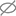

Lights
Light components are the primary source of lighting in a Qt Design Studio scene. As a secondary light source, you can use image-based lighting.
To add a light component to your UI, do one of the following:
- Drag a light component from Components > Qt Quick 3D to the 3D view or to Navigator > View3D > Scene.
- Right-click in the 3D view and select Create > Lights from the context menu.
If you cannot find the light components in Components, add the Qt Quick 3D module to your project as instructed in Adding and Removing Modules.
Note: If you select Qt 5 as the Target Qt Version when creating your project, the available light components and their properties will be slightly different. The properties may also be situated differently in the Properties view.
By default, all imported scenes are created with one directional light. You can use the following components to add lights:
| Icon | Name | Qt 5 Only | More Information |
|---|---|---|---|
| Directional Light | Light Directional | ||
| Point Light | Light Point | ||
| Spot Light | Light Spot | ||
 | Area Light |  | Light Area |
Note: Each additional light negatively effects the rendering performance of your scene. Keep scenes as simple as possible and use lights sparingly. Use a Scene Environment component to apply image-based lighting that can produce soft and subtle lighting.
To edit light properties, select a light component in the Navigator or 3D view, and then adjust its properties in the Properties view or by dragging the yellow light gizmo handles in the 3D view.
To specify an overall multiplier for a light component's effects, adjust the Brightness property. The Scope property specifies which component, with its children, is illuminated by the light. Set the Color property to specify the color applied to models illuminated by a light. Set the Ambient color property to specify the ambient color applied to materials before being illuminated by the light.
You can animate light properties in the Timeline view.
Directional Light
A directional light emits light in one direction from an unidentifiable source located infinitely far away. This is similar to sunlight.
Use the Brightness handle of the light gizmo (1) to adjust the Brightness property of any of the light components.

If the Casts shadow property is enabled, shadows are positioned parallel to the light direction. A directional light has infinite range and does not diminish.
Moving a directional light does not have any effect. The light will always be emitted in the direction of the light's z axis. Rotating the light along its x or y axis will change the direction in which the light is emitted.
Scaling a directional light will only have an effect in the following cases:
- If the z scale is set to a negative number, the light will be emitted in the opposite direction.
- If the scale of any axis is set to 0, the light will be emitted along the world's z axis. Rotating the light has no effect.
Point Light
A point light can be described as a sphere that emits light with equal strength in all directions from the center of the light. This is similar to the way a light bulb emits light.
Lighting is applied outwards from the center of a point light, becoming increasingly dim away from the center. Moving a point light changes the position from where the light is emitted. Rotating or scaling a point light does not have any effect.
To control the fade-off and range of a point light, set the Constant fade, Linear fade, and Quadratic fade properties. Constant fade is the constant factor of the attenuation term of the light. Attenuation refers to the reduction in the intensity of light as it travels through a medium due to absorption or scattering of photons.
Turn up the linear fade value to increase the rate at which the lighting effect dims the light in proportion to the distance to the light. The value 0.0 means that the light doesn't have linear fade.
Turn up the quadratic fade to increase the rate at which the lighting effect dims on surfaces that are far away from the light. The value 1.0 means that the point light fade exactly follows the inverse square law. For example, when the distance to a component doubles, the light intensity decreases to one fourth. Adjust the Quadratic fade in the Properties view, or by using the light gizmo handle (2).
Aside from fade, a point light has the same properties as a directional light.
Spot Light
A spot light emits light towards one direction in a cone shape. The light intensity diminishes when approaching the value of the Cone angle property. The angle at which the light intensity starts to diminish is defined by the Inner cone angle property. Both angles are defined in degrees in the Properties view. Use the Properties view or the light gizmo handles to adjust the Cone angle (3), Inner cone angle (4), and Quadratic fade (5) properties.
Inside the inner cone angle, the spot light behaves similarly to the point light. There the light intensity diminishes according to inverse-square-law. However, the fade-off (and range) can be controlled with the Constant fade, Linear fade, and Quadratic fade properties.
Area Light
Note: The Area Light component is only available in Qt 5.
An area light is similar to the directional light. However, instead of emitting an equally bright light across the whole scene, the area light emits directional light from a rectangle shaped component. Use the light gizmo or the Properties view to set the Width (6) and Height (7) properties to determine the size of the area light.
Aside from the size, an area light has the same properties as a directional light.
The image shows an example on how to light a component with different colors using two different area lights.
You can rotate, scale, and move area lights.
Shadows
To simulate shadows using this light, enable the Cast shadows check box. Cast shadows work best with area or point lights.
To specify the darkness of the shadows, set the Shadow factor property. The value 0 means no shadows are cast.
To specify the amount of blur applied to the shadows, set the Shadow filter property.
Tweak the Shadow bias property value by small amounts if you see components casting shadows on themselves.
To specify the quality of the shadow map created for shadow rendering, set the Shadow map quality property. Lower quality uses less resources, but produces lower quality shadows, while higher quality uses more resources to produce better quality shadows.
To specify the maximum distance for the shadow map, set the Shadow map far property value. Using smaller values may improve the precision and effects of the map.
Baked Lightmaps
Note: Lightmaps baking is released as technical preview in Qt Design Studio 4.1.
Baked lightmaps allow pre-generating the direct lighting from lights, such as DirectionalLight, PointLight, and SpotLight, including the shadows cast by the lights. At run time, instead of performing the appropriate calculations in the fragment shader, and, in case of shadows, generating the potentially costly shadow maps in real time, the pre-generated light map is sampled instead.
Baking Lightmaps
To bake lightmaps for models in your 3D scene:
- Select
 in the 3D view toolbar or right-click anywhere in the 3D view and select Bake Lights to open the Lights Baking Setup dialog to define settings for baking lights.
in the 3D view toolbar or right-click anywhere in the 3D view and select Bake Lights to open the Lights Baking Setup dialog to define settings for baking lights. - Set Bake Mode for each light source:
- To bake both direct (diffuse and shadow) and indirect lighting, select Bake All.
- To bake only indirect lighting, select Bake Indirect.
- To not include a light source in the baking of lights, select Baking Disabled.
- For every 3D model you want to bake into a lightmap, select In Use and Enabled, and set the desired Resolution.
- Optional. If you have components with unexposed models or lights (for example, imported 3D models created in other software), select Expose models and lights to add the models and light of that component to the Models and Lights sections of the dialog.
- Select Bake.
Manually Baking Lightmaps for a 3D Model
Note: Baked lightmap components are not visible in the Navigator view by default. To make them visible, select  in the Navigator view.
To bake lightmaps for a 3D model:
- From Components, drag a Baked Lightmap component to the 3D model in the Navigator view.

- In the Navigator view, select bakedLightmap, and in the Properties view:
- Select Enabled.
- In Key, set the filename base for the generated light maps. This must be a unique name.
- In Load Prefix, set the relative path to the folder where the generated light map files are saved.
- In the Navigator view, select the 3D model and in the Properties view, select Used in Baked Lighting.
- Optional. Adjust Resolution to set the light map resoution. This effects how accurate and time-consuming the lightmap baking is.
- In the Navigator view, select the light component that you want to bake lightmaps for, and in the Properties view, set Bake Mode to BakeModeAll.
- Right-click anywhere in the 3D view and select Bake Lights.
- Select Setup baking manually, and then select Bake.
Manually Baking Lightmaps for a 3D Model Inside a Sub Component
To bake lightmaps for a 3D model inside a sub component, first add a local custom property to expose the model:
- In the Navigator view, right-click the sub component and select Edit Component.
- In the Navigator view, select the root component.
- In the Properties view, select
 in the Local Custom Properties section.
in the Local Custom Properties section. - Add a new property, set Type to alias.
- For the property, set the value to the ID of the 3D model that you want to bake lightmaps for.
- In the Navigator view, select the 3D model and in the Properties view:
- Select Used in Baked Lighting.
- Set Resolution to, for example, 128.
- Save your changes (Ctrl+S) and return to the main project file. To do this, select the bread crumb in the top toolbar.
- From the Components view, drag a Baked Lightmap component to the sub component in the Navigator view.
- In the Navigator view, select the sub component and go to the Code view.
- In the Code view, you need to set the properties for the model inside the sub component by using the exposed property.
Add the following code inside the sub component.
lmSphere.bakedLightmap: bakedLightmapIt should look something like this:
MyGroup { id: group lmSphere.bakedLightmap: bakedLightmap BakedLightmap { id: bakedLightmap loadPrefix: "lightmaps" } } - In the Navigator view, select bakedLightMap, and in the Properties view:
- Select Enabled.
- In Key, set the filename base for the generated light maps. This must be a unique name.
- Right-click anywhere in the 3D view and select Bake Lights.
- Select Setup baking manually, and then select Bake.